Turquía · Turkey
Riesgo máximo 8.2328 eventos · 46 de alto riesgo · Último 28 oct
Bienvenido a ATHENA News Room: las noticias del mundo de cientos de redacciones, agrupadas en eventos y explicadas con cifras. Cada noticia lleva a sus fuentes originales.
 ATHENA
ATHENALos medios locales se encienden en el mapa: los vecinos se unen cuando informan de la misma historia.
Cada país en las noticias, ordenado por la cobertura verificada que reúne y el riesgo que conlleva. Cada cifra se calcula a partir de los eventos mostrados.
328 eventos · 46 de alto riesgo · Último 28 oct
299 eventos · 38 de alto riesgo · Último 28 oct
208 eventos · 33 de alto riesgo · Último 28 oct
214 eventos · 23 de alto riesgo · Último 28 oct
165 eventos · 21 de alto riesgo · Último 28 oct
104 eventos · 16 de alto riesgo · Último 27 oct
81 eventos · 18 de alto riesgo · Último 28 oct
88 eventos · 14 de alto riesgo · Último 28 oct
58 eventos · 13 de alto riesgo · Último 28 oct
41 eventos · 6 de alto riesgo · Último 28 oct
32 eventos · 2 de alto riesgo · Último 28 oct
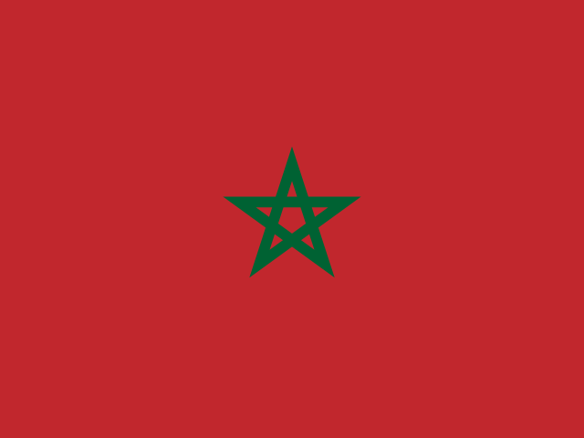
26 eventos · 4 de alto riesgo · Último 28 oct
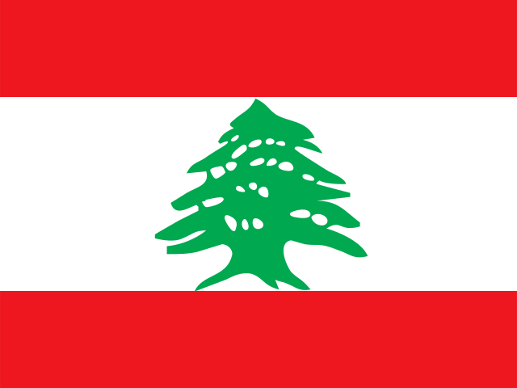
6 eventos · 1 de alto riesgo · Último 27 oct
394 eventos · 38 de alto riesgo · Último 28 oct
163 eventos · 27 de alto riesgo · Último 28 oct
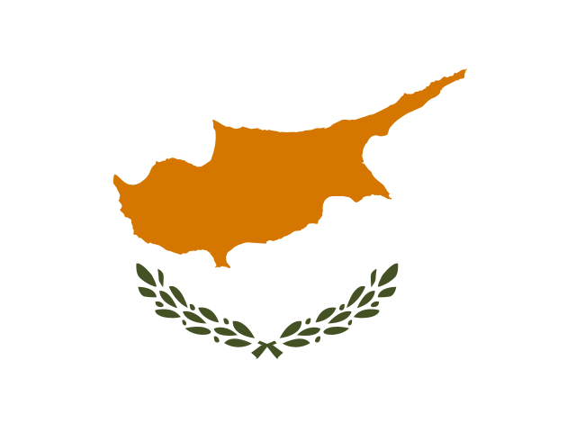
136 eventos · 21 de alto riesgo · Último 28 oct
110 eventos · 18 de alto riesgo · Último 28 oct
93 eventos · 21 de alto riesgo · Último 28 oct
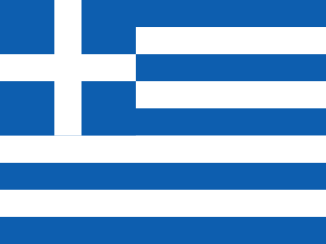
76 eventos · 9 de alto riesgo · Último 28 oct
61 eventos · 9 de alto riesgo · Último 28 oct
63 eventos · 1 de alto riesgo · Último 27 oct
37 eventos · 3 de alto riesgo · Último 28 oct
17 eventos · 1 de alto riesgo · Último 28 oct
13 eventos · 1 de alto riesgo · Último 27 oct
11 eventos · 1 de alto riesgo · Último 27 oct
9 eventos · 1 de alto riesgo · Último 27 oct
6 eventos · 2 de alto riesgo · Último 27 oct
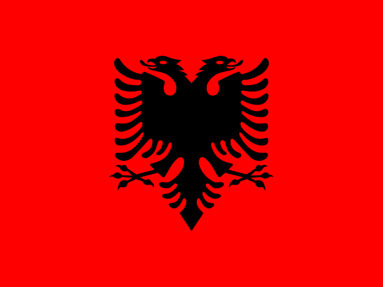
7 eventos · 1 de alto riesgo · Último 27 oct
9 eventos · Último 28 oct
308 eventos · 35 de alto riesgo · Último 28 oct
261 eventos · 36 de alto riesgo · Último 28 oct
52 eventos · 12 de alto riesgo · Último 28 oct
47 eventos · 8 de alto riesgo · Último 28 oct
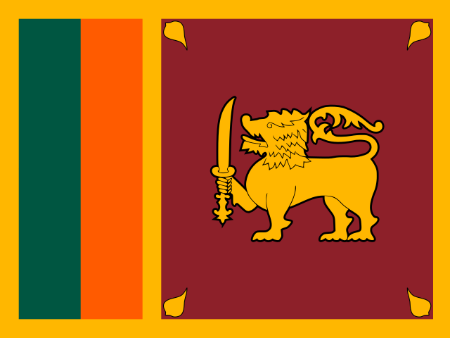
32 eventos · 5 de alto riesgo · Último 28 oct
29 eventos · 6 de alto riesgo · Último 27 oct
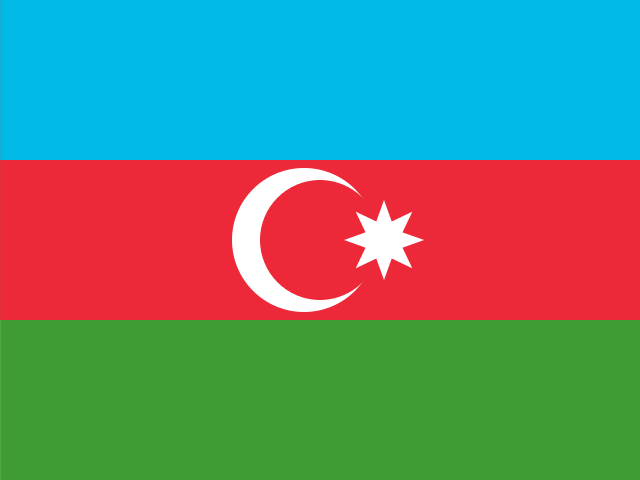
184 eventos · 34 de alto riesgo · Último 28 oct
180 eventos · 26 de alto riesgo · Último 28 oct
183 eventos · 23 de alto riesgo · Último 28 oct
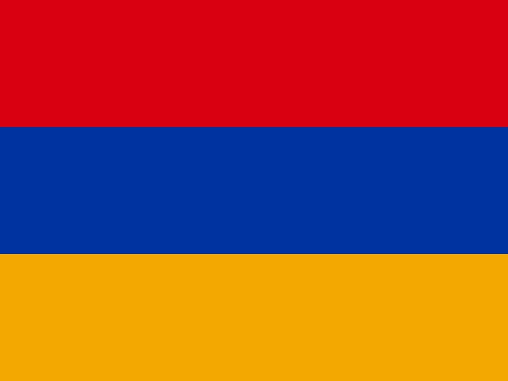
22 eventos · 6 de alto riesgo · Último 28 oct
11 eventos · Último 27 oct
436 eventos · 55 de alto riesgo · Último 28 oct
76 eventos · 16 de alto riesgo · Último 28 oct
315 eventos · 49 de alto riesgo · Último 28 oct
80 eventos · 12 de alto riesgo · Último 28 oct
52 eventos · 6 de alto riesgo · Último 28 oct
24 eventos · 1 de alto riesgo · Último 28 oct
9 eventos · 1 de alto riesgo · Último 28 oct
6 eventos · 1 de alto riesgo · Último 27 oct
159 eventos · 16 de alto riesgo · Último 28 oct
105 eventos · 14 de alto riesgo · Último 28 oct
80 eventos · 14 de alto riesgo · Último 28 oct
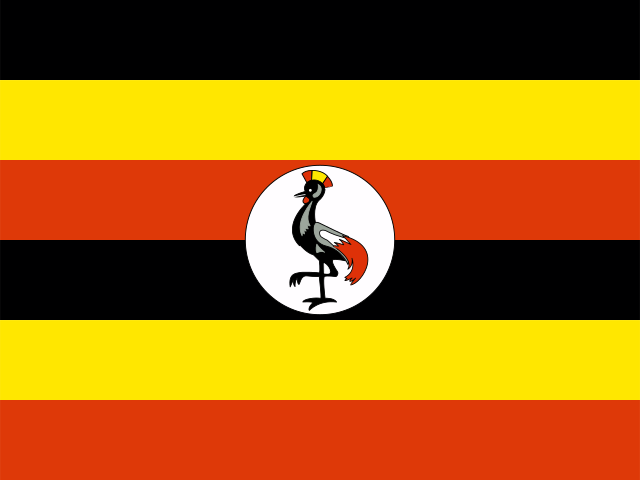
45 eventos · 5 de alto riesgo · Último 28 oct
22 eventos · 5 de alto riesgo · Último 27 oct
18 eventos · 2 de alto riesgo · Último 27 oct
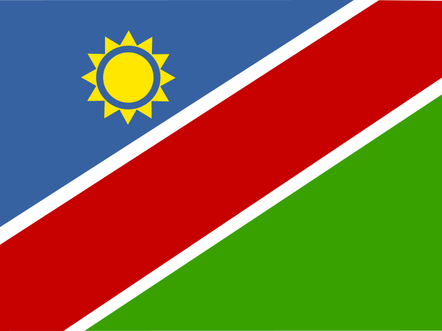
17 eventos · 1 de alto riesgo · Último 27 oct
19 eventos · Último 27 oct
8 eventos · 2 de alto riesgo · Último 27 oct
7 eventos · 1 de alto riesgo · Último 27 oct
6 eventos · 1 de alto riesgo · Último 28 oct
138 eventos · 28 de alto riesgo · Último 28 oct
127 eventos · 19 de alto riesgo · Último 28 oct
87 eventos · 8 de alto riesgo · Último 28 oct
38 eventos · 4 de alto riesgo · Último 28 oct
84 eventos · 18 de alto riesgo · Último 28 oct
66 eventos · 12 de alto riesgo · Último 28 oct
17 eventos · 3 de alto riesgo · Último 28 oct
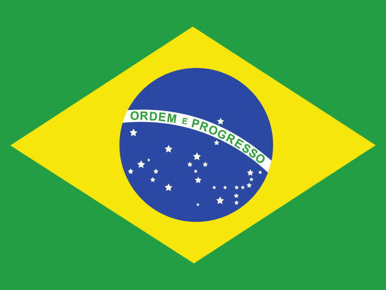
69 eventos · 4 de alto riesgo · Último 28 oct
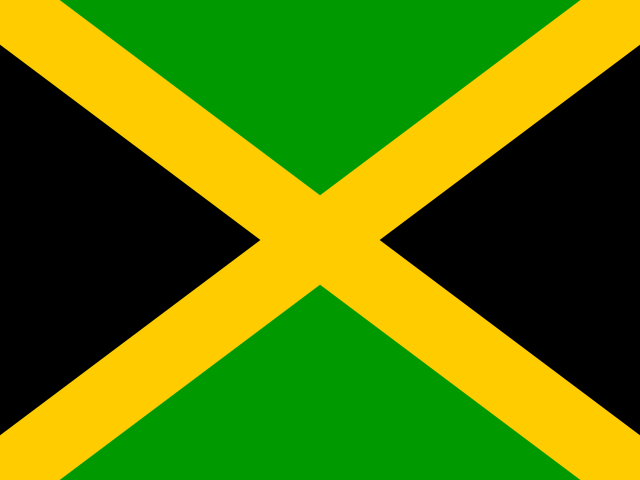
38 eventos · 6 de alto riesgo · Último 28 oct
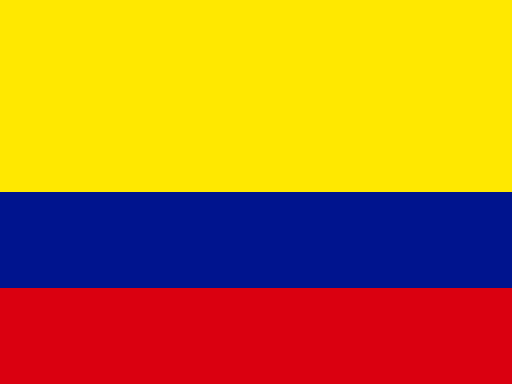
12 eventos · 3 de alto riesgo · Último 27 oct
17 eventos · Último 28 oct
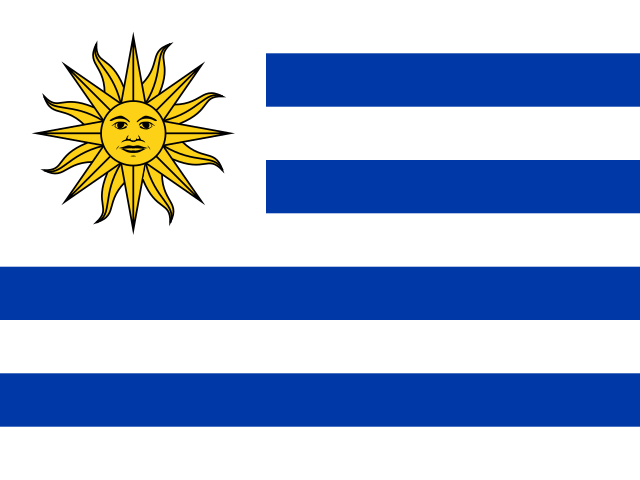
14 eventos · Último 28 oct
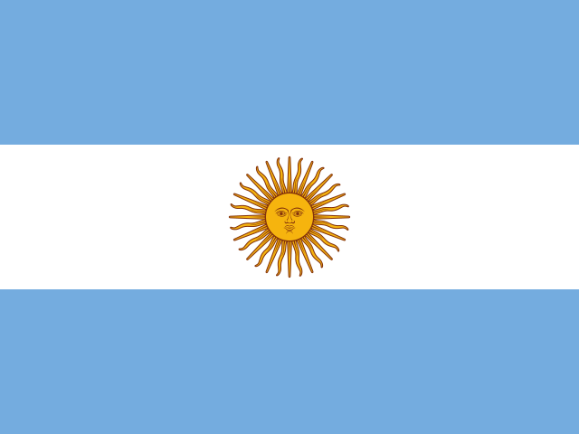
14 eventos · Último 28 oct
Colores de riesgo: dorado por debajo de 4 · ámbar 4–6 · naranja 6–8 · rojo 8 o más (escala 0–10).
ATHENA solo publica un evento cuando al menos dos medios independientes lo informan.